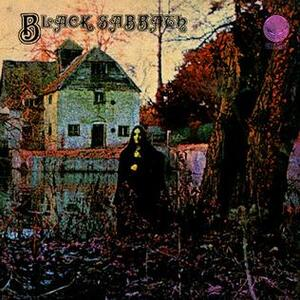
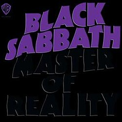

Descubre características de este maravilloso género!
Descubre el sonido caracterizado por guitarras distorsionadas, ritmos potentes y una gran energía.
Inmersate en las diferencias de sus vertientes
Hay muchas opciones para escuchar, desde más suave a más extremo.
Aprende a disfrutar el metal
Muchas veces cuesta engancharse, pero una vez que lo entendés encontras uno de los mejores géneros.
Metallica
Metallica es una de las bandas de heavy metal más influyentes y exitosas de la historia . Formada en Los Ángeles en 1981 por el baterista Lars Ulrich y el guitarrista y vocalista James Hetfield, la banda se convirtió en pionera del thrash metal, un subgénero caracterizado por su velocidad, agresividad y virtuosismo técnico. Con álbumes icónicos como Master of Puppets (1986) y The Black Album (1991), Metallica alcanzó fama mundial gracias a himnos como ‘Enter Sandman’, ‘One’ y ‘Nothing Else Matters’. A lo largo de su carrera, la banda ha experimentado con diferentes sonidos, manteniéndose vigente y reinventándose con cada disco. Metallica es famosa por sus potentes presentaciones en vivo y su fiel base de fans alrededor del mundo. Su legado continúa inspirando a nuevas generaciones de músicos y amantes del metal, consolidando su lugar como leyenda indiscutible del rock.
Integrantes
James Hetfield
James Alan Hetfield (Downey, California, 3 de agosto de 1963) es un músico estadounidense, conocido por ser el vocalista, guitarrista rítmico, principal compositor y cofundador de la banda Metallica. Es considerado como uno de los mejores músicos de heavy metal de todos los tiempos.
Kirk Hammett
Kirk Lee Hammett (San Francisco, 18 de noviembre de 1962) es un músico estadounidense, conocido principalmente por ser el guitarrista lider de la banda de thrash metal Metallica.
Cliff Burton
Clifford Lee Burton (Castro Valley, 10 de febrero de 1962—Dörarp, 27 de septiembre de 1986) fue un músico estadounidense, conocido por haber sido el virtuoso bajista de la banda de heavy metal, Metallica, en sus primeros tres álbumes de estudio, hasta su fallecimiento a la edad de veinticuatro años.
Lars Ulrich
Lars Ulrich (Gentofte, 26 de diciembre de 1963) es un músico danés, conocido principalmente por ser el baterista, compositor y cofundador de la banda estadounidense Metallica.
Canciones Populares
Enter Sandman

Master of Puppets
One
Iron Maiden
Iron Maiden es una de las bandas más emblemáticas e influyentes del heavy metal. Formada en Londres en 1975 por el bajista y principal compositor Steve Harris, la banda se destacó rápidamente por su estilo potente, marcado por guitarras gemelas, letras épicas y la inconfundible voz de Bruce Dickinson. Con álbumes legendarios como The Number of the Beast (1982), Powerslave (1984) y Seventh Son of a Seventh Son (1988), Iron Maiden consolidó un sonido único que combina el metal clásico con temáticas históricas, literarias y de fantasía. Famosos por sus espectaculares conciertos y su icónica mascota Eddie, Iron Maiden ha conquistado escenarios de todo el mundo y ha mantenido una base de fans leal durante décadas. La banda sigue activa, lanzando nuevos discos y giras multitudinarias, demostrando que su legado y su pasión por el metal permanecen tan fuertes como siempre.
Integrantes
Bruce Dickinson
Paul Bruce Dickinson (Worksop, Nottinghamshire, 7 de agosto de 1958), más conocido como Bruce Dickinson, es un cantante, compositor, músico y productor musical. Es famoso por ser el vocalista, frontman y cocompositor de la banda de heavy metal Iron Maiden. Es considerado por muchos expertos de canto, medios y el público en general como uno de los mejores cantantes de la historia de este género.
Adrian Smith
Adrian Frederick Smith (Hackney, Londres, 27 de febrero de 1957) es un guitarrista y cantante británico, principalmente conocido por su trabajo con la banda de heavy metal Iron Maiden. También ha tenido una destacada participación como compositor, tanto en sus trabajos como solista, así como en Iron Maiden junto al bajista Steve Harris.
Steve Harris
Stephen Percy Harris, (Waltham Forest, Gran Londres, Inglaterra, 12 de marzo de 1956) conocido artísticamente como Steve Harris, es un músico británico, siendo mayormente conocido por ser el fundador, bajista, teclista, compositor principal y líder del grupo británico de heavy metal Iron Maiden.
Nicko McBrain
Michael Henry McBrain (Hackney, Gran Londres, Inglaterra, 5 de junio de 1952) es el baterista del grupo británico de heavy metal Iron Maiden retirado de las giras desde 2024. El nombre de Nicko lo adoptó como sobrenombre tal y como se llamaba su osito de peluche preferido. McBrain es acreditado como uno de los pioneros del sonido de heavy metal. En 2009 la revista Rolling Stone publicó la lista de los 100 mejores baterías de todos los tiempos, en ella Nicko fue incluido en el puesto número 38.
Dave Murray
David Michael Murray (Edmonton, Londres, 23 de diciembre de 1956) es un músico y compositor conocido por formar parte de la banda británica de heavy metal Iron Maiden, siendo él y Steve Harris los únicos miembros de la agrupación que han aparecido en toda la discografía de la misma.
Canciones Populares

Run To The Hills

Fear Of The Dark
The Trooper
Black Sabbath
Black Sabbath es considerada la banda pionera del heavy metal y una de las más influyentes de la historia del rock. Formada en Birmingham, Inglaterra, en 1968 por Tony Iommi (guitarra), Ozzy Osbourne (voz), Geezer Butler (bajo) y Bill Ward (batería), la banda dio forma a un sonido oscuro y pesado que sentó las bases del metal. Con riffs potentes, letras sombrías y una atmósfera única, álbumes como Paranoid (1970), Master of Reality (1971) y Black Sabbath (1970) se convirtieron en clásicos atemporales. Canciones como ‘Iron Man’, ‘War Pigs’ y ‘Paranoid’ siguen siendo himnos del género. A lo largo de las décadas, Black Sabbath influyó en innumerables bandas y estilos dentro del metal y el rock pesado. Tras múltiples reuniones y giras de despedida, su legado continúa vivo, celebrando su lugar como padres fundadores de un género que transformó para siempre la música.
Integrantes
Ozzy Osbourne
John Michael Osbourne (Marston Green, Birmingham; 3 de diciembre de 1948), más conocido como Ozzy Osbourne, es un músico y compositor británico, reconocido por haber sido el cantante de la banda de heavy metal Black Sabbath y por su carrera como solista.
Tony Iommi
Anthony Frank Iommi, conocido como Tony Iommi (Aston, Birmingham, 19 de febrero de 1948), es un músico y compositor británico, reconocido por haber sido uno de los fundadores de la banda de heavy metal Black Sabbath y el único miembro fundador que estuvo presente en todos los álbumes de la misma. Es considerado uno de los guitarristas más importantes e influyentes en la historia del rock y el padre de muchos de los riffs utilizados en el hard rock y el heavy metal.
Geezer Butler
Terence Michael Joseph "Geezer" Butler (Aston, Birmingham, Inglaterra; 17 de julio de 1949) es un músico y compositor británico, célebre por formar parte de la banda de heavy metal Black Sabbath como bajista[1] y escritor de las letras de sus canciones. Geezer también ha grabado con Heaven and Hell, GZR y Ozzy Osbourne.
Bill Ward
William Thomas Ward (Aston, Birmingham, 5 de mayo de 1948), más conocido como Bill Ward, es un músico británico, reconocido por haber sido el baterista y uno de los miembros originales de la banda de heavy metal Black Sabbath. Es uno de los miembros fundadores de la banda en 1968 y cantó en dos canciones de Black Sabbath: "It's Alright" (del disco Technical Ecstasy) y "Swinging the Chain" (del disco Never Say Die!).
Canciones Populares

Paranoid

N.I.B

Children Of The Grave